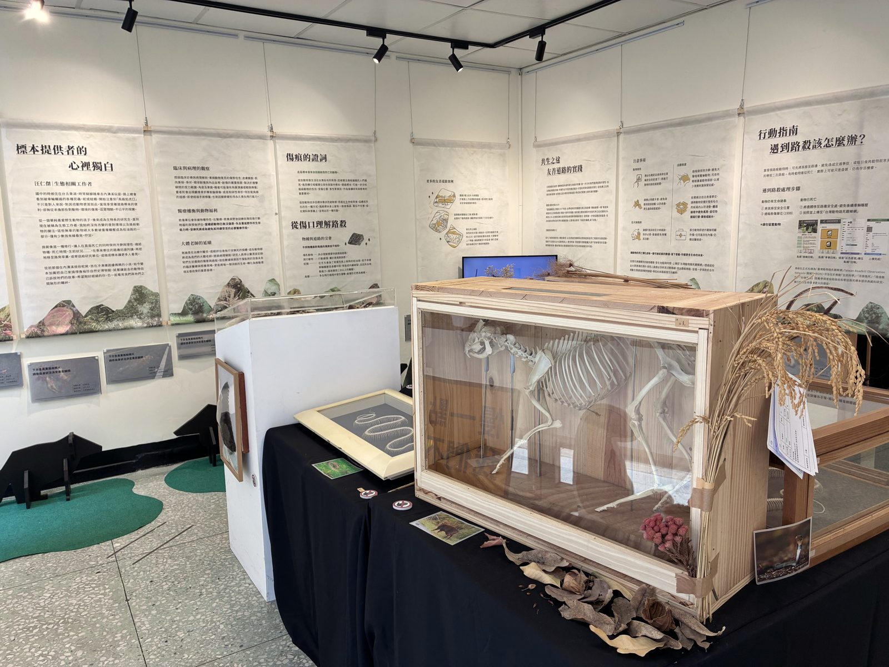
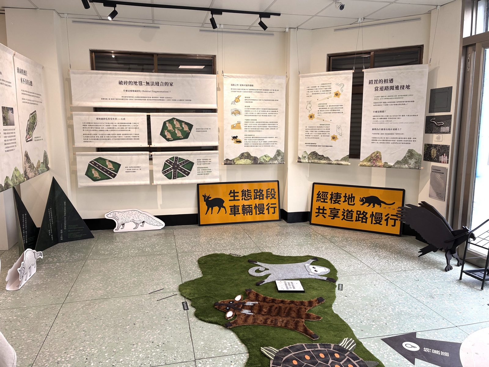

身為救傷中心的我們深深明白，想要阻止動物受傷，單靠末端的包紮止血是不夠的；必須更主動積極地將保育觀念推展出去，才能從源頭上減少人類與動物之間的衝突。因此，野灣在距離池上火車站步行兩分鐘的大街上，規劃了「野灣保育探索館」這個空間，邀請大家一同認識野生動物，進一步關心、支持野生動物保育。
常設展區
展區中栩栩如生的動物標本，都是曾經傷病入院，卻不幸離世的野生動物。雖然死亡將動物的生命帶走，但經過標本師的巧手，讓牠們彷彿重新獲得靈魂，讓更多人看見傷病動物背後的議題，也使牠們的生命價值得以延續。
除了標本外，野生動物不同的食性配對、型態不一的動物便便，都等你來探索！

特展區
保育探索館規劃特展空間，與同樣關注生態保育的好夥伴們共同策劃特展，內容每半年更新一次。
近期特展介紹：獵場工作室策劃《饒了我吧－慢行南迴之森・與動物共生》，詳見「當期特展」分頁。

閱讀區
野灣館藏兒童繪本、自然科普讀物、野生動物桌遊及教具。邀請您花些時間坐下來，好好享受閱讀一本書籍。


當期特展
《饒了我吧－慢行南迴之森・與動物共生》
「當動物要通過馬路，牠們會遇到什麼危險？」
對我們而言，公路是通往美景、回家的路；但對野生動物而言，短短幾公尺的柏油路，可能就是一場生死考驗。
由臺東南迴在地團隊「獵場工作室」策劃，曾於2026台東博覽會亮相的《饒了我吧》，來到池上的野灣保育探索館啦！
透過真實的動物標本、趣味的互動設計、在地生態調查紀錄，帶你換上野生動物的視角，探索公路上那些容易被我們忽略的生命，以及道路與自然環境之間的關係。
邀請你放慢腳步，重新認識我們與野生動物共享的這片土地。讓每一條回家的路，對人與動物而言，都能是一條平安的路。
展覽亮點
翻開馬路上的生命故事
馬路上那些被壓扁的動物，原本長什麼模樣？牠們又有著什麼樣的生活習性？透過翻頁式互動展品，認識那些與我們擦身而過的野生動物。
近距離觀察真實動物標本
平時難得一見的野生動物，竟然就生活在人類道路的周圍！透過真實的動物標本與影像，認識南迴地區豐富的生物多樣性，也看見牠們面臨的生存危機。
公路上的生態調查秘密
哪些動物最容易發生車禍？哪些路段特別危險？從南迴公路上的真實調查紀錄，一窺生態調查人員如何從動物留下的線索，找出道路上的危機。
考量動物需求的交通標誌
看看為野生動物設計的交通標誌，想像一條對動物更友善的公路。你也可以學習如何回報路殺事件、協助救傷通報，成為守護野生動物的公民科學家！
特展資訊
- 展覽名稱
- 饒了我吧－慢行南迴之森・與動物共生
- 展期
- 2026/11/21 – 2027/11/21
- 策展團隊
- 獵場工作室
- 地點
- 野灣保育探索館
（臺東縣池上鄉中山路227號） - 開放時間
- 09:00–12:00、13:00–17:00
每週三公休 - 入場方式
- 免費入場，自由觀展